终端里的编程助手
Claude Code
在黑色命令窗口里对话，能读写你指定文件夹里的文件，适合写代码、改文档。
路线一 · 新手推荐 · Windows
不需要懂编程，也不需要科学上网。网页帮你生成两个小脚本：一个负责安装软件，一个负责把汇码的地址和 Key 填进软件。
终端里的编程助手
在黑色命令窗口里对话，能读写你指定文件夹里的文件，适合写代码、改文档。
有窗口的编程助手
OpenAI 出品，像普通软件一样点开使用。装不上时脚本会自动改装命令行版。
办公助手
腾讯出品的桌面 AI 助手，适合写作、整理资料等日常办公。
开始之前
新手路线是整个接入流程的第 4、5 步。还没有账号或 Key？先按手册首页完成 01 注册登录、02 确认额度和 03 创建 API Key，再回到这里。
| 要用的软件 | Key 的风格 |
|---|---|
| Claude Code | Anthropic（Claude 模型） |
| Codex | OpenAI（GPT 模型） |
| WorkBuddy | OpenAI 风格（和 Codex 同一种） |
不确定也没关系：4.2 一键配置会自动检查 Key 能用哪些模型，不匹配会直接提示你。
第 4.1 步 · 安装
已经装好的软件可以不勾。脚本只从国内能访问的官方渠道和镜像下载，已经装过的会自动跳过。
安装脚本里没有任何 Key，可以放心保存，以后重装还能再用。
Edge 会提示“huima-install.cmd 可能会损害你的设备。是否仍要保留？”。这是浏览器对所有脚本文件的通用提醒，点击“保留”即可。
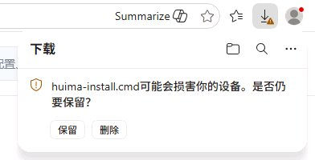
打开浏览器的“下载”列表，点击 huima-install.cmd。Windows 可能弹出“打开文件 - 安全警告：无法验证发布者”，点“运行”；也可能是蓝色的“Windows 已保护你的电脑”，点“更多信息”→“仍要运行”。
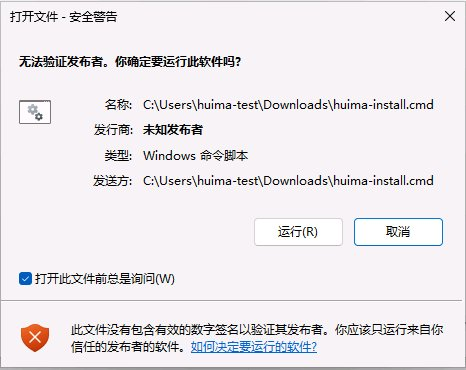
安装 Node.js 时屏幕会变暗，弹出授权窗口，标题写的是“Windows® 安装程序”，这就是在安装 Node.js。默认选中的是“否”，请用鼠标点“是”，不要直接按回车。其他时候不用操作，看着窗口里的进度等待即可，通常几分钟到半小时。
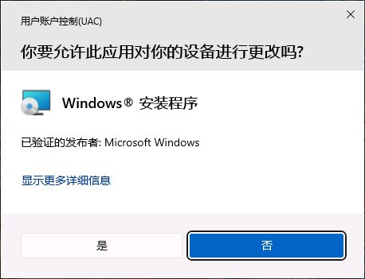
每个软件后面显示“完成”就说明装好了。显示“失败”时，检查网络后重新双击脚本，已装好的会自动跳过。按任意键关闭窗口，继续第 3 步。
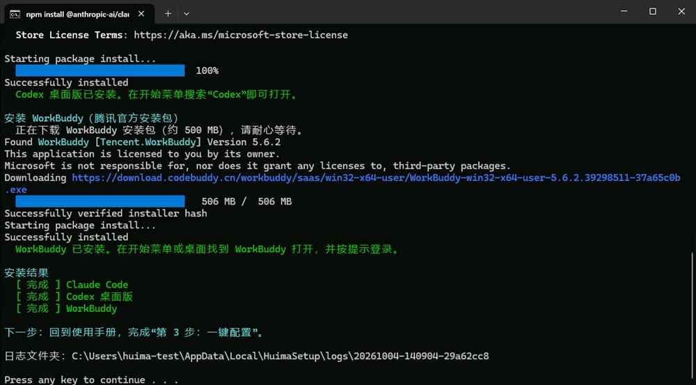
| 软件 | 怎么安装 |
|---|---|
| Claude Code | 先检查 Node.js，没有就从 npmmirror 国内镜像下载官方安装包并校验；再从国内镜像安装 @anthropic-ai/claude-code。 |
| Codex 桌面版 | 用 Windows 自带的 winget 从微软商店安装（商店编号 9PLM9XGG6VKS）。失败时打开商店页面，并从国内镜像安装 Codex 命令行版，配置方法相同。 |
| WorkBuddy | 用 winget 安装腾讯官方安装包 Tencent.WorkBuddy。失败时打开 WorkBuddy 官网，由你点击下载安装。 |
脚本不会关闭杀毒软件，不会修改系统安全设置，也不会读取你的文件。安装日志保存在 %LOCALAPPDATA%\HuimaSetup\logs，出问题时可以发给客服。
第 4.2 步 · 配置
勾选要用的软件，给每个软件粘贴对应的 Key、选好模型，下载配置脚本并双击运行，软件就会连上汇码。默认只勾选了 Claude Code，要用 Codex 或 WorkBuddy 时再勾上。
2. 为每个软件粘贴 Key，再读取模型
不同软件要用不同风格的 Key，所以每个勾选的软件都要单独粘贴：Claude Code 用 Anthropic 风格的 Key，Codex 和 WorkBuddy 用 OpenAI 风格的 Key。
Claude Code 会按任务调用不同角色的模型。分组里没有的角色，会自动用最接近的可用模型代替，避免调用不存在的模型而报错。
粘贴 Key 后，点击“读取可用模型”。
点“读取可用模型”时，页面会用你的 Key 向汇码查询模型列表，这一步不产生费用。Key 不会被保存，离开页面自动清空。
关闭 Claude Code 的命令窗口、Codex 和 WorkBuddy，避免它们覆盖新配置。
和安装脚本一样，提示时选“保留”“更多信息 → 仍要运行”。窗口里会列出要配置的软件，确认后输入 Y 并回车。
每个软件后面显示“完成”就好了。Claude Code 下面还会列出各角色对应的模型。最后会问是否删除这个脚本：输入 Y 回车，关闭窗口时它会自动删除，Key 不会留在下载文件夹里。
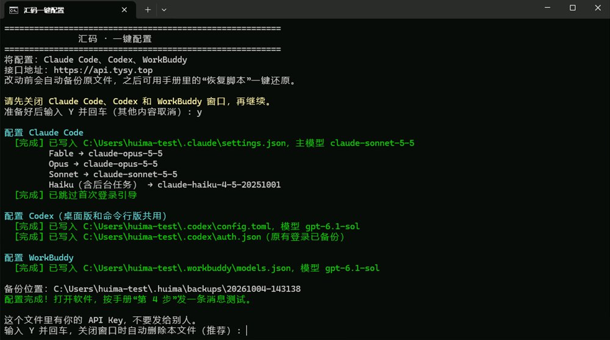
| 软件 | 写入的文件和内容 |
|---|---|
| Claude Code | .claude\settings.json：汇码地址、Key、主模型，以及 Fable / Opus / Sonnet / Haiku / 子代理各角色对应的模型；.claude.json：标记已完成首次引导，打开时不再要求登录 Anthropic 账号。其他设置保持不变。 |
| Codex | .codex\config.toml：添加“汇码”服务商并设为默认；.codex\auth.json：保存 Key（原来的登录信息会先备份）。 |
| WorkBuddy | .workbuddy\models.json：添加汇码自定义模型，保留你已有的其他自定义模型。 |
修改前，原文件会备份到 %USERPROFILE%\.huima\backups。随时可以用恢复脚本还原。备份里可能有你以前的 Key，不要发给别人。
第 5 步 · 测试
每个软件发一条短消息测试，再去汇码使用记录看到对应的记录，就说明全部完成了。测试消息也会产生少量费用，发一次就够。
在桌面新建文件夹，名字用英文，例如 ai-test，不要放重要文件。Claude Code 能读写这个文件夹里的内容。
打开 ai-test 文件夹，点击窗口顶部的地址栏，输入 cmd 并回车，会弹出一个黑色的命令窗口，位置就在这个文件夹里。
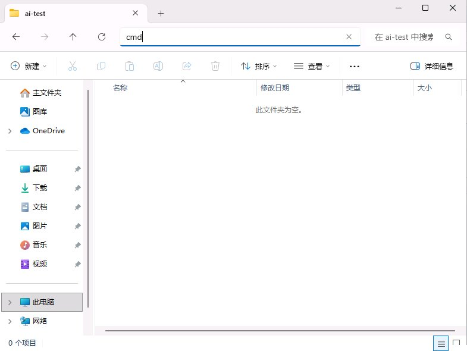
第一次会问是否信任这个文件夹（界面是英文）。默认选中的是“No, exit”（退出），请先按键盘的 ↓ 选到“Yes, I trust this folder”（是，我信任这个文件夹），再按回车。
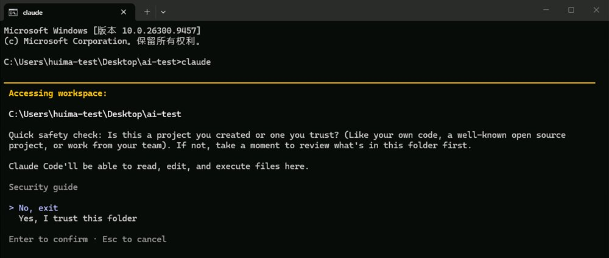
粘贴测试消息并回车，收到“连接成功”就好了。顶部会显示当前模型和“API Usage Billing”（按汇码用量计费）。
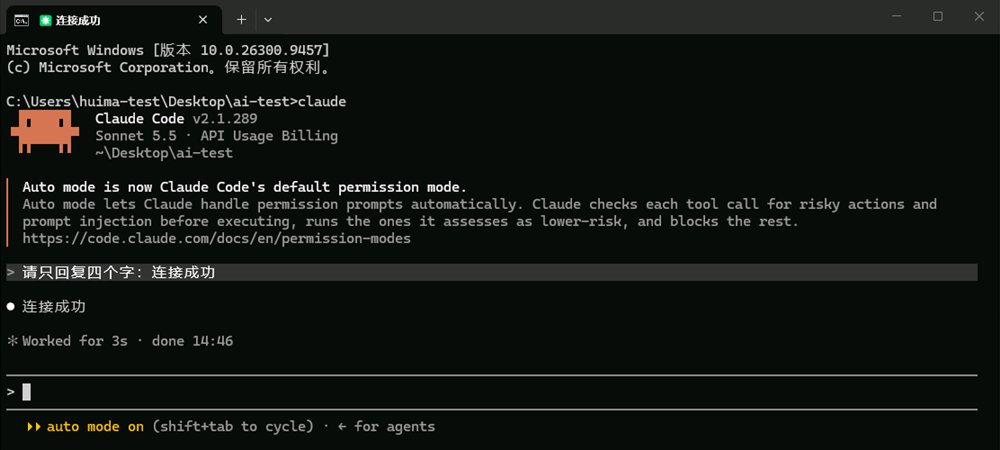
Claude Code 默认使用“自动模式”：它会自己判断操作的风险，低风险的操作直接执行，不再逐条询问。所以练习文件夹里不要放重要文件。
在 Claude Code 里输入 /model 回车，可以看到 Opus、Fable、Sonnet、Haiku 各角色对应的汇码模型，用 ↑↓ 选择、回车确认。分组里没有的角色会自动用相近的模型代替，所以可能出现两个相同的名称。
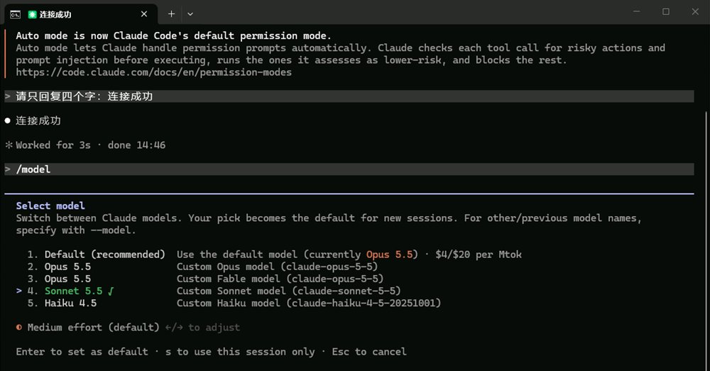
在开始菜单搜索“Codex”打开，窗口标题显示“ChatGPT Work”，这就是 Codex 桌面版。左下角显示“汇码”、输入框右边显示“6.1 Sol”，说明已经连上汇码，不需要登录 ChatGPT 账号。点“Choose project”选练习文件夹，在输入框粘贴测试消息发送。如果安装时改装成了命令行版，按上面 Claude Code 的方法打开命令窗口，输入 codex 回车即可。
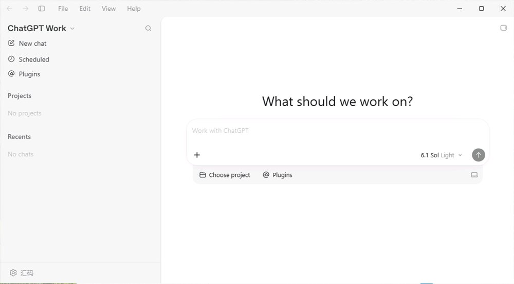
codex，并告诉客服你的 Codex 版本。这种情况不要为了登录去购买 ChatGPT 订阅。打开 WorkBuddy 并登录。点输入框右下角的“快速”按钮打开模型列表，滚到最底部，在“自定义模型”里选中刚才配置的模型（例如 gpt-6.1-sol），粘贴测试消息发送。
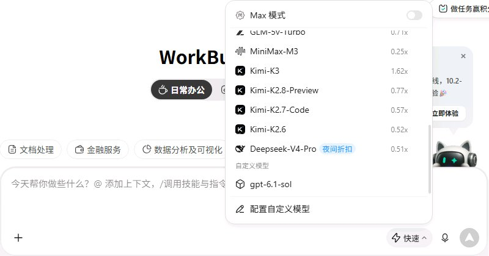
以后会用到
回到4.2 一键配置，粘贴新的 Key 或选择新模型，重新下载配置脚本并运行即可。新配置会覆盖旧配置，覆盖前同样会自动备份。
只想换其中一个软件，4.2 只勾选那一个。换下来的旧 Key 如果不再使用，记得到汇码 API 密钥页面禁用它。
以后会用到
想撤销汇码的配置，回到运行配置脚本之前的样子，下载恢复脚本并双击运行。它会还原最近一次配置前的文件；再运行一次，可以继续还原更早的一次。
恢复脚本里没有 Key，可以放心保存。
恢复只影响本机软件的设置，不会删除汇码账号里的 Key。要彻底停用某把 Key，请到汇码 API 密钥页面禁用。
遇到问题
| 看到什么 | 怎么处理 |
|---|---|
| 浏览器说文件可能有害 | 在下载列表点“保留”。脚本来自本手册页面，内容可以用记事本打开查看。 |
| “Windows 已保护你的电脑” | 点击“更多信息”，再点“仍要运行”。 |
| 窗口一闪就没了 | 确认下载的是 .cmd 文件，而不是 .txt。请直接双击运行，不要选“以管理员身份运行”，否则配置可能写到别的账户里。仍然闪退时联系客服。 |
| 杀毒软件拦截 | 选择“允许”或“信任”这个文件，不需要关闭杀毒软件。拿不准时把截图发给客服。 |
| 提示没有 winget | Windows 10 较老的版本可能没有。在微软商店搜索“应用安装程序”并更新，再重新运行安装脚本。Claude Code 不受影响。 |
| Codex 桌面版装不上 | 脚本会自动改装命令行版，可以正常使用。想要桌面版，可在打开的微软商店页面点“获取”。 |
| “claude 不是内部或外部命令” | 关闭所有命令窗口，重新打开再试。仍然不行就重新运行安装脚本，查看“安装结果”。 |
| “无法加载文件 claude.ps1，因为在此系统上禁止运行脚本” | 在 PowerShell 窗口里会遇到。改用 cmd 打开命令窗口再输入 claude；或者重新运行一次安装脚本，它会修复这个问题，之后 PowerShell 也能用。不需要修改系统的脚本执行策略。 |
| Claude Code 仍要求登录 | 确认已运行配置脚本并显示“完成”，然后关闭命令窗口重新打开。还不行把配置脚本窗口的截图发给客服（先遮住 Key）。 |
| 401 / Key 无效 | Key 可能复制不完整或已被禁用。到汇码重新复制，回到 4.2 一键配置重新生成配置脚本。 |
| 403 / 模型不存在 | Key 的分组不支持这个模型。回到 4.2 一键配置点“读取可用模型”，从列表里重新选。 |
| 余额不足 / 429 | 查看账户余额和 Key 的额度限制，暂停反复重试。详见手册首页的排查表。 |
还没解决？按求助模板联系客服，附上脚本窗口截图或日志文件夹。截图前遮住 Key。